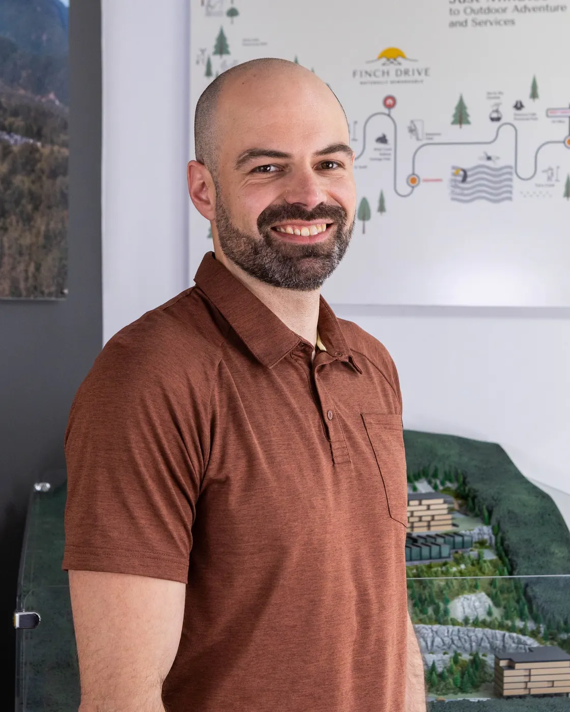
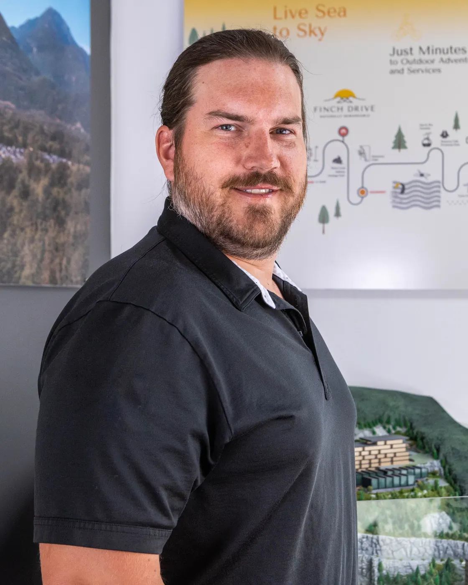
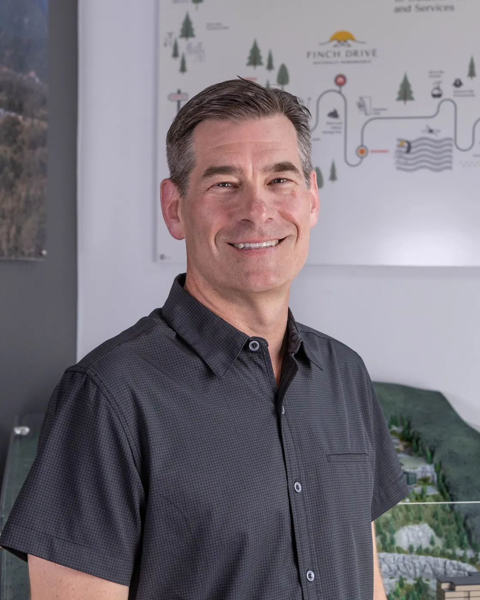
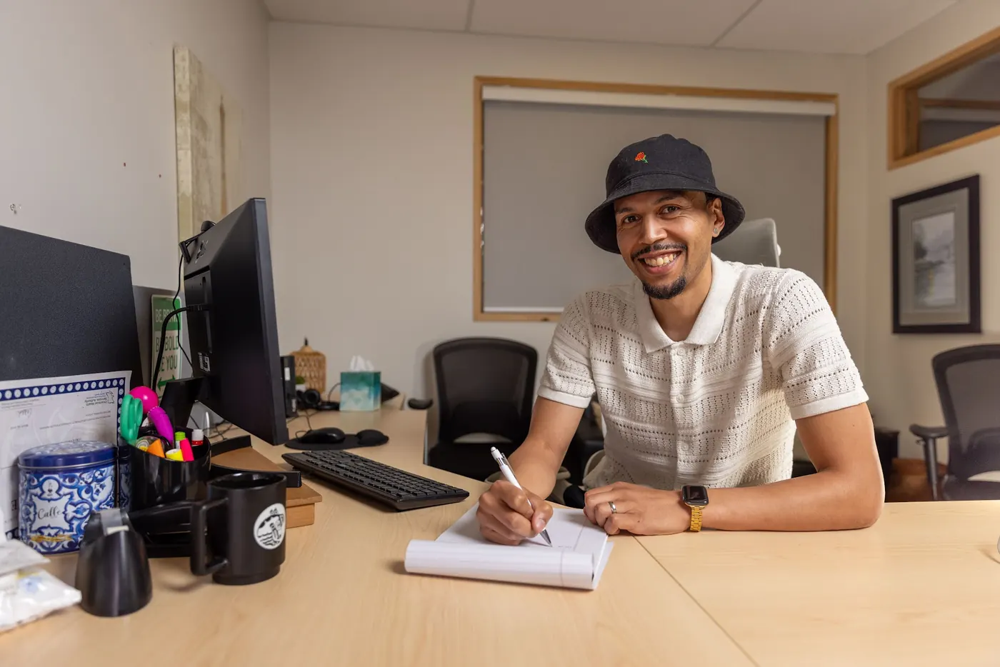
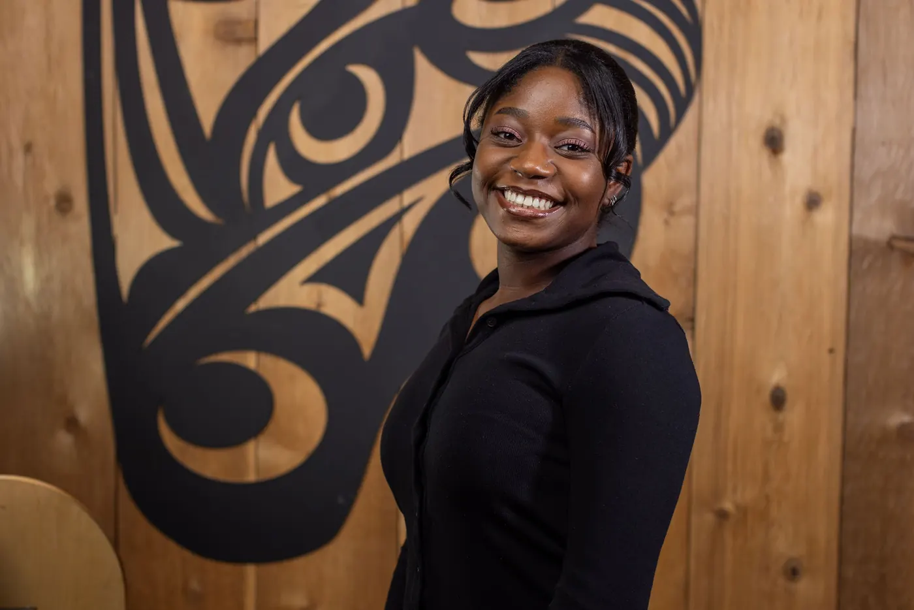
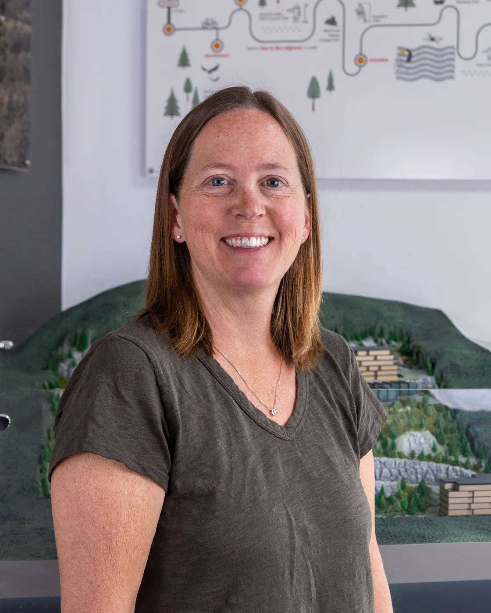

Corporate headshots • Team days • Personal branding
Natural, confident headshots that look like your team on a good day. I bring a portable studio to your office, so the whole team can be photographed in one morning with consistent lighting across every photo.
Options
A good headshot is the first handshake. I keep sessions quick and relaxed, coach expressions and posture, and keep shooting until everyone has one they actually like.
A portable studio at your office, a tight schedule and a consistent look for the whole team.
Use your office, signage, artwork or view, so the photos feel like your company and nowhere else.
People at work: at the desk, in the shop or on site. Great for about pages and annual reports.
LinkedIn, speaker bios, realtor and founder portraits, indoors or out in the mountains.
A pop-up station at your event where attendees get a polished headshot in minutes.
Everyone picks their favourite in an online gallery. Retouched finals follow.
Recent sessions
Recent team days at offices in the Sea to Sky, with clean, branded and environmental backgrounds.






Along with classic headshots, I can photograph your people where they work. These environmental portraits tell clients who they’ll be dealing with and what you do.
How it works
Headcount, location and date. I’ll send a quote and schedule.
A short note for your team on what to wear and expect.
A quick, relaxed session per person with consistent lighting.
Online proofing, then retouched finals in web and print sizes.
Questions
Yes. I bring lights and a backdrop and set up a small studio in a meeting room, or use your own space, signage or art wall as the background for a branded look.
Usually around 5 to 10 minutes per person for a team day, so a team of 15 to 20 can be done in a morning without pulling anyone away for long.
Yes. I keep the lighting, framing and background consistent, so your staff page looks like one set, and I note the setup so new hires can be matched later.
Yes. Individual sessions work well for realtors, founders, speakers, actors and anyone who needs a fresh LinkedIn or press photo. We can shoot in studio-style light or outdoors with the mountains behind.
Yes. Everyone gets an online proof gallery to pick favourites, and the final retouched headshots are delivered in web and print sizes.
Solid colours that you’d wear to an important meeting usually look best. Avoid busy patterns and logos. I’ll send a short prep guide before the shoot.
Yes. Final headshots get natural retouching: skin, stray hairs and colour, without making anyone look like someone else.
Tell me how many people, where you are and when. I’ll send a quote and a simple schedule.
Book Headshots